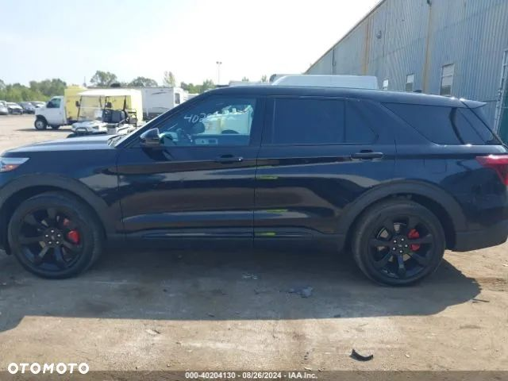
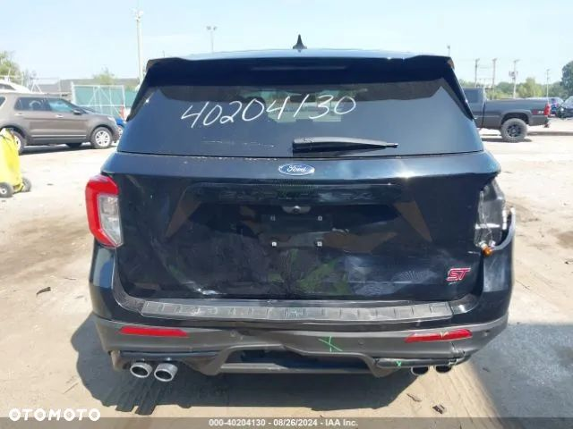
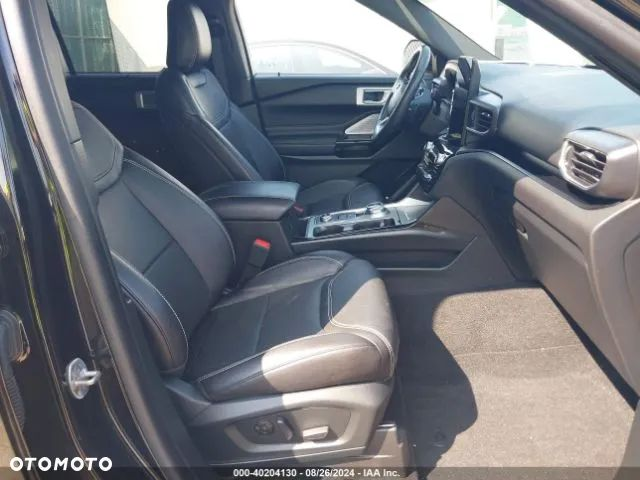
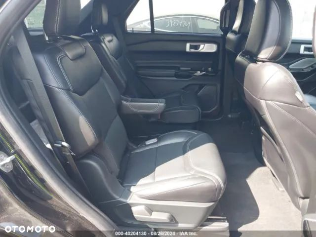
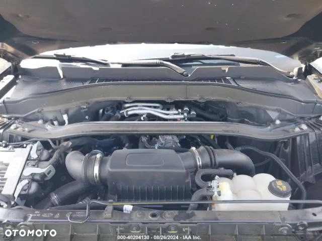
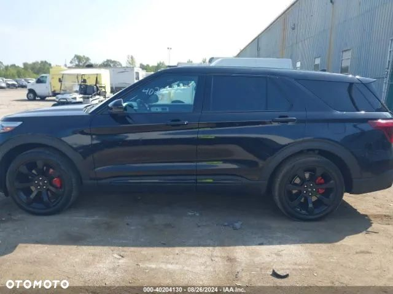
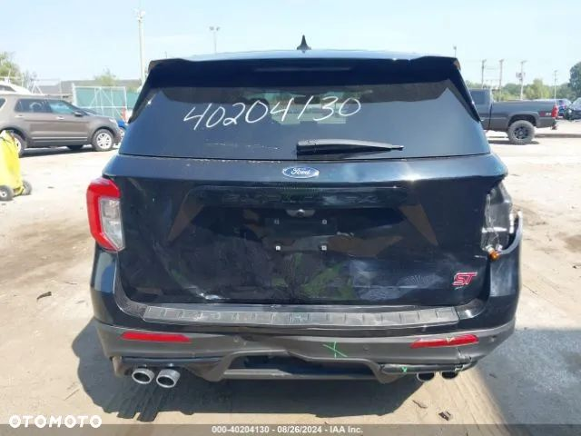
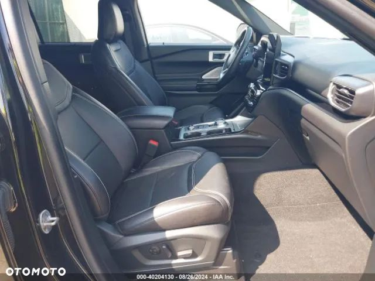
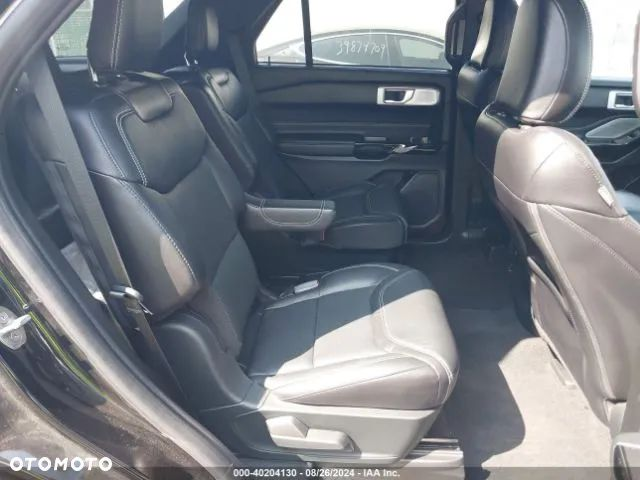
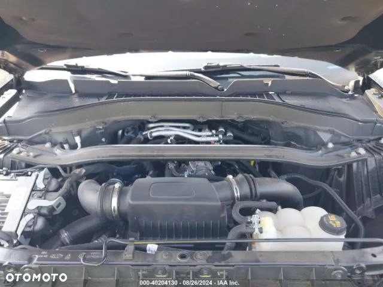

FORD pali i jeździ uszkodzony w tył jak na przedstawionych zdjęciach. Auto w bogatej wersji wyposażenia, wersja ST z 3-litrowym doładowanym silnikiem o mocy 400km. Samochód regularnie serwisowany jest to jego jedyny wypadek od nowości. Posiadamy w ofercie również inne egzemplarze w różnych wersjach i rocznikach. Zaoszczędź do 40 % na zakupie samochodu, sprowadzając go z nami z USA lub Kanady! Sprowadzamy auta z USA i Kanady pod zamówienie klienta! Załatwiamy wszystkie formalności związane z zakupem, transportem oraz opłatami zarówno w Holandii jak i Polsce! Kompleksowa obsługa od A do Z. Z powodzeniem działamy na rynku importu od wielu lat, co potwierdzają nasi stali klienci! Oferowane przez nas samochody pochodzą tylko i wyłącznie od największych amerykańskich firm ubezpieczeniowych lub poleasingowych. Dodatkowo każde auto przed licytacja jest gruntownie sprawdzane pod względem jego historii, wcześniejszej wypadkowości oraz wielu innych aspektów aby zapewnić klientowi 100% bezpieczeństwa! Cena podana w ogłoszeniu zawiera wszystkie opłaty importowe z transportem pod wskazany adres, pozostają koszty związane z rejestracja pojazdu w Polsce oraz ewentualna naprawa auta. Jeżeli nie podoba Ci się konkretny egzemplarz prezentowany w ogłoszeniu, podaj nam swoje wytyczne; kolor, silnik, przebieg, rocznik, a my znajdziemy odpowiednią sztukę! Zapraszamy serdecznie do naszego biura, które mieści się pod Warszawą: 05-230 Kobyłka Ul. Nadarzyńska 83 Zapraszamy w godzinach: Pn-Pt 09:00 - 17:00 lub w innych godzinach po wcześniejszym umówieniu się. Lub do całodobowego kontaktu telefonicznego: .ooa-j3iomg{background-color:transparent;border:none;color:#0071CE;cursor:pointer;font-size:16px;padding:0;white-space:break-spaces;}Wyświetl numer Wyświetl numer Wyświetl numer Nasze realizacje znajdziesz na Facebooku oraz Istagramie: U.S Automotive - kompleksowy import aut z USA i Kanady Lub www.usautomotive.pl Powyższa oferta ma charakter informacyjny i nie stanowi oferty handlowej w rozumieniu art. 66 §1 Kodeksu Cywilnego


 
